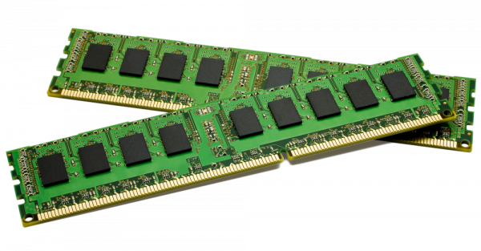

Having a high-quality computer with robust hardware is a fundamental requirement for gaming enthusiasts. It underpins the entire gaming experience in various critical ways. To begin, a powerful computer ensures that your gameplay is exceptionally smooth and free from issues like lag and frame rate drops, thus immersing you deeply in the gaming world. Furthermore, top-notch hardware, particularly a high-end graphics card, elevates the visual quality of games, allowing you to enjoy them at higher resolutions with richer textures, realistic lighting, and special effects.
A capable gaming rig also delivers quick loading times, thanks to components like solid-state drives (SSDs), enabling you to jump into the action swiftly and reducing downtime. Additionally, the multitasking capability of a good gaming computer lets you run various applications simultaneously, such as voice chat, streaming software, and web browsers, without compromising the gaming experience. Such a system serves as an investment in future-proofing, as it can adapt to handle resource-intensive games that are released in the coming years. In competitive gaming, where split-second reactions and precise control are essential, a high-performance computer with low input lag and high refresh rates can provide a competitive edge. Furthermore, a well-equipped PC is better suited for handling mods and custom content, allowing you to tailor your gaming experience to your liking. While acquiring a gaming computer with decent hardware may involve an initial investment, the advantages in terms of enhanced performance, stunning graphics, and extended versatility make it a worthwhile commitment for dedicated gamers.
Here are 5 Essential PC components
1. Motherboard
The motherboard is the central nervous system of a computer. It serves as the main circuit board that connects and orchestrates all the computer's components. It provides a platform for the CPU, GPU, RAM, and storage devices to communicate with each other. Through a complex network of connectors and circuits, the motherboard supplies power and data connections to these components, ensuring they work in harmony. It also houses various essential interfaces and ports for peripherals like USB devices, network cables, and audio equipment. Without the motherboard, the various parts of the computer would lack a way to interact and collaborate, rendering the computer non-functional.
2. CPU(Central Processing Unit)
The CPU is often described as the brain of the computer, and for good reason. It is responsible for executing instructions and performing the majority of calculations in the system. The CPU controls the operation of software and hardware, making it the core processing unit. Every operation, from opening an application to running complex simulations, relies on the CPU's processing power. The CPU's performance and architecture significantly impact the overall speed and capabilities of a computer. Multicore processors have become standard, enabling computers to handle multiple tasks simultaneously, enhancing multitasking and overall performance.
3. GPU(Graphical Processing Unit)
The GPU is primarily tasked with handling graphical tasks. While its core function is rendering graphics for displays, modern GPUs are incredibly powerful and versatile. They are crucial for gaming, 3D rendering, video editing, and other graphics-intensive applications. Beyond this, some GPUs are equipped for general-purpose computing tasks, such as machine learning and scientific simulations. These GPUs can accelerate these computations, making them more efficient and quicker to complete. In gaming, the GPU's performance directly impacts the quality and speed of graphics, contributing to a more immersive experience.

4. RAM(Random Access Memory)
RAM serves as a computer's short-term memory. It stores data and program code that the CPU is actively using or will need in the near future. Unlike storage devices, which retain data even when the computer is turned off, RAM is volatile and only retains data while the computer is powered on. More RAM allows a computer to hold a larger amount of data in its working memory, improving multitasking and speeding up the execution of applications. When the RAM is insufficient to accommodate the tasks at hand, the computer may become sluggish as it swaps data between RAM and slower storage devices.
5. Storage(SSD/HDD)
Storage devices, such as hard drives (HDDs) and solid-state drives (SSDs), are responsible for long-term data storage. HDDs provide vast storage capacity at a lower cost, but they are relatively slow compared to SSDs. SSDs, on the other hand, are much faster but usually offer less storage capacity. Operating systems, software applications, and user files are stored on these devices. The storage is non-volatile, meaning it retains data even when the computer is powered off. Users access their stored data, whether it's documents, images, videos, or applications, from these storage devices, and the speed and capacity of the chosen storage technology directly impact the computer's overall performance and responsiveness.